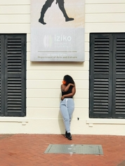

Amanda Okuhle Fono

Which city?

Paris
Paris is a city and Capital of France. Situated in north-central part of the country. Paris is one of the world's most important and attractive cities. It is appreciated for the opportunitied it offers for business and commerce, for study, for culture and for entertainment.Paris is extremely romantic, it has so many places dedicated to romance. Paris has deeply interesting historical and artistic culture.
A Foreign Language with English phrases
The foreign language I would like learn is French language. French is the most widely spoken language worldwide. The ability to speak french is an advantage on the international job market.
| French | English |
|---|---|
| Bonjour, comment vas-tu? | Hello, how are you? |
| Quel age avez-vous? | How old are you? |
| Comment etait votre journee? | How was your day? |
Historical Places in Cape Town
- The Groot Kerk was the first Christian church built in the Cape, soon after the arrival of Jan van Riebeek.
- The Groote Kerk is carvernous inside, it is regarded as one of the most prominent Dutch Reformed churches in the country.
- The church is virtually all timber-wooden organ, and a hugely ornate wooden pulpit with a sculpture of two lions.
Groote Kerk

- Cape Town City Hall is one of our oldest and most central public spaces and home to the Cape Philharmonic Orchestra.
- City Hall was built in 1905 and is a grandiose victorian statement, reminiscent of the French second empire.
- The clock in the turrent is modelled on Big Ben and is exactly half the size, the dials being 10 foot 6 inch in diameter.
City Hall

- The South African museum founded in 1825 and situated in the historic Company’s Gardens has seen millions of visitors all attracted by the vast historical collection the museum has to offer, which ranges from fossils to ancient insects and historical tools.
- The South African Museum houses more than one and a half million specimens of scientific importance.
- The South African Museum was founded by Lord Charles Somerset in 1825 as a general museum comprising natural history and material culture from local and other groups further afield.
Iziko Museums
